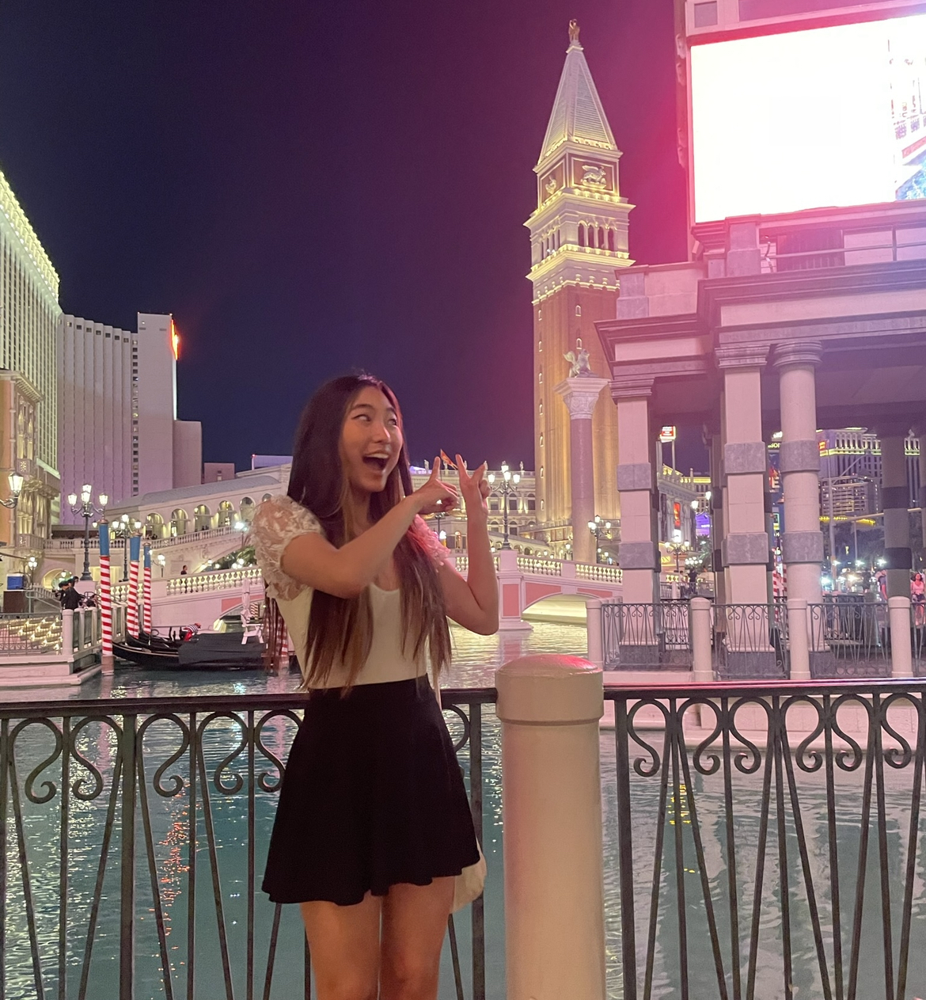

Lynn Chien
Computer Science & Data Science || 2nd Year
HELLO, my name is Lynn and I like League of Legends and Valorant (add me: noodleguine#5889).
Dumpling Kitchen
Bagel Street Cafe
Noodle Dynasty

Click here!
Reading Responses
1. I learned that by observing your favorite applications and focusing on
the details can bring you so much new information about what makes a design
effective!
2. My favorite part of the article is when the writer broke down each aspect of
an effective application, such as AirBnB & Twitter, which are commonly used among
the many. There were some details I hadn't even thought about before, such as the suggestion
to "Try London" for the AirBnB search bar, because it's so subtle yet can largely
influence the user's engagement.
3. "I’m sure many designs have gone through explorations where the Dates aren’t
presented until you select a location. This makes me curious about how people
search and when they introduce filters to their searches."
4. 8/10! I always like learning more about design principles and the psychology behind it.